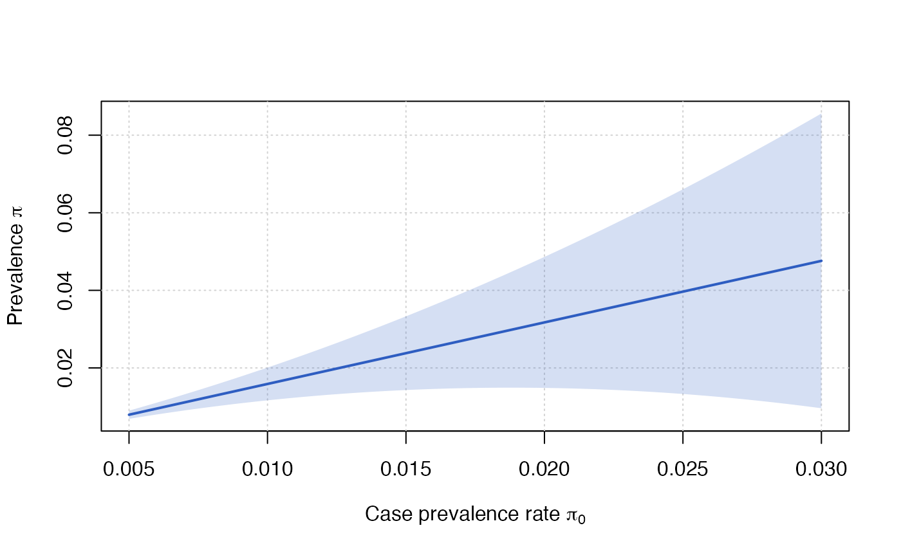

Updated prevalence and confidence intervals using new case prevalence rates
update_prevalence(
pi0_new,
x,
gamma = 0.05,
print = NULL,
plot = NULL,
col_line = "#2e5dc1",
col_ci = "#2E5DC133",
...
)A numeric or vector of new case prevalence rates
A cpreval object.
A numeric that used to compute a (1 - gamma) confidence region for the proportion. Default value is 0.05.
A boolean indicating whether or not the output should be print.
A boolean indicating whether or not a plot should be made.
Color of the estimated prevalence.
Color of the estimated prevalence confidence interval.
Additional arguments.
A matrix object whose colunms corresponds to pi0, estimate, sd and CI.
# Austrian data (November 2020)
pi0 = 93914/7166167
data("covid19_austria")
# Weighted sampling
n = nrow(covid19_austria)
R1w = sum(covid19_austria$weights[covid19_austria$Y == 1 & covid19_austria$Z == 1])
R2w = sum(covid19_austria$weights[covid19_austria$Y == 0 & covid19_austria$Z == 1])
R3w = sum(covid19_austria$weights[covid19_austria$Y == 1 & covid19_austria$Z == 0])
R4w = sum(covid19_austria$weights[covid19_austria$Y == 0 & covid19_austria$Z == 0])
# Assumed measurement errors
alpha0 = 0
alpha = 1/100
beta = 10/100
# MME
mme = moment_estimator(R3 = R3w, n = n, pi0 = pi0, alpha = alpha, beta = beta,
alpha0 = alpha0, V = mean(covid19_austria$weights^2))
mme
#> Method: Moment Estimator
#>
#> Estimated proportion: 2.0794%
#> Standard error : 0.3699%
#>
#> Confidence interval at the 95% level:
#> Asymptotic Approach: 1.3544% - 2.8045%
#>
#> Assumed measurement error: alpha = 1%, beta = 10%,
#> alpha0 = 0%
#>
#> Estimated false negative rate of the
#> official procedure: beta0 = 36.98%
#> CI at the 95% level: 15.00% - 58.95%
#>
#> Estimated ascertainment rate:
#> pi0/pi = 63.02%
#> CI at the 95% level: 41.05% - 85.00%
#>
#> Sampling: Stratified with V = 1.51
# Update prevalence using a new pi0, say = 1.5%, instead of 1.31%
update_prevalence(1.5/100, mme)
#> Estimated proportion: 2.3801%
#> Standard error : 0.4846%
#> Confidence interval at the 95% level: 1.4303% - 3.3299%
pi0_new = seq(from = 0.005, to = 0.03, length.out = 100)
update_prevalence(pi0_new, mme)
